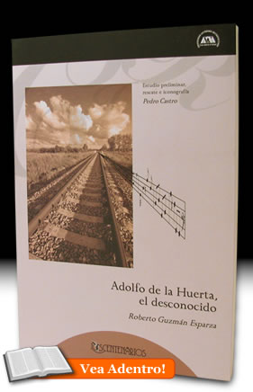

- Inicio
- Publicaciones
- Álvaro Obregón fuego y cenizas de la Revolución Mexicana
- Adolfo de la Huerta El desconocido de Roberto Guzmán Esparza
- A la Sombra de un Caudillovida y muerte del general Francisco R. Serrano
- Soto y Gamagenio y figura
- Adolfo de la Huerta Serie Grandes Protagonistas de la Historia Mexicana
- Historia del Agrarismo en México
- Ciudad Cuauhtémoc, Chihuahuacrónica de su fundación
- Adolfo de la Huerta: la integridad como arma de la revolución
- Adolfo de la Huerta y la Revolución Mexicana
- Fronteras Abiertasgeopolítica y expansionismo en Brasil contemporáneo
- Currículum

ISBN: 978-970-31-0964-7
Editorial: Universidad Autónoma Metropolitana. Colección Los Centenarios. Dirección de Publicaciones y Promoción Editorial de la Coordinación General de Difusión. 2009, 189 pp.
Adolfo de la Huerta, el Desconocido, por Roberto Guzmán Esparza. Edición y estudio preliminar por Pedro Castro
Adolfo de la Huerta, revolucionario, presidente interino, secretario de Hacienda y dirigente de una rebelión que llevó su nombre, fue también maestro de ópera desde 1928 hasta 1934. Radicado en los Estados Unidos, tuvo en la enseñanza musical su modo de vida, en el distrito cinematográfico de Los Ángeles, donde abrió un estudio en compañía de su esposa, la pianista Clarita Oriol. El tema sería meramente una curiosidad –la insólita de un ex presidente con aficiones artísticas- de no ser porque logró ser reconocido como un capaz maestro de bel canto, que enseñó a noveles, cambió tesituras de voz y ayudó a profesionales a recuperar su voz perdida. Este libro partió de un manuscrito inédito de Roberto Guzmán Esparza –autor de las Memorias de don Adolfo de la Huerta según su propio dictado-, al que Pedro Castro agregó una investigación con las mejores fuentes disponibles acerca de de la trayectoria musical del ex presidente, además de rescatar fotografías y cartas del mayor interés, en un esfuerzo por echar luz a uno de los capítulos menos conocidos de quien fue presidente de México en 1920. De esta manera, Adolfo de la Huerta forma parte de la selecta galería de políticos-artistas latinoamericanos, en los que también figuran José Martí, Domingo Faustino Sarmiento y Rómulo Gallegos. Con este trabajo Pedro Castro concluyó un proyecto de muchos años en torno a la vida y obra del ilustre personaje, uno de los más relevantes en la etapa de la reconstrucción del Estado mexicano.
Réplicas y consultas con el autor: pedrocastro3131@gmail.com
Dos arias cantadas por Enrico Caruso Jr., alumno de don Adolfo de la Huerta:
Índice
- ESTUDIO PRELIMINAR. ADOLFO DE LA HUERTA, PRESIDENTE Y ARTISTA, PEDRO CASTRO
Adolfo de la Huerta, el artista, 15
Los primeros pasos en el arte, 15
Roberto Guzmán, de rebelde a cantante, 19
Los de las voces rotas, 21
Leonor Rosas y Luis de Ibargüen, 24
Cómo trabajaba el maestro Adolfo de la Huerta, 26
El caso de Enrique Caruso Jr., 28
El maestro en acción, 34 - ADOLFO DE LA HUERTA, EL DESCONOCIDO, ROBERTO GUZMÁN ESPARZA
Prólogo de Rafael Trujillo Herrera, 39
El bel canto, 47
La iniciación, 55
El caso de Patterson Green, 80
El caso de Elfrieda Wynne, 84
La canción del desierto, 88
La canción del Oeste, 95
Bajo la luna de Texas, 99
Las producciones en español, 105
Vaudeville, 119
El caso de Enrico Caruso Jr., 123
El maestro, 130
Cantante de ópera, 134
Agustín Lara vs. Leoncavallo, 138
El jilguero de Los Ángeles y otras aves celestiales, 143
Miguel Álvarez Acosta, 146
Lo que puedo transmitir de lo que aprendí, 149 - APÉNDICE, FACSIMILARES Y FOTOGRAFÍAS
Presentación
Presentación del libro
Archivo PowerPoint [descargar aquí]
Roberto Guzmán Esparza, Adolfo de la Huerta, Clara Oriol de De la Huerta, Karl Breneman, Enrico Caruso, Enrico Caruso Jr., Luis de Ibargüen, Alfonso Pedroza, Álvaro Obregón, Plutarco Elías Calles, Antonio Nicola Pórpora, Miguel Álvarez Acosta, Familia Rufino, Leonor Rosas, Gilbert Roland, Tito Schipa, Rafael Trujillo Herrera, José C. Valadés